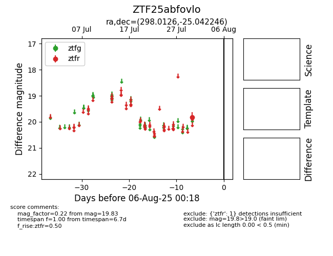

Target ZTF25abfovlo at 2025-08-06 01:32, see:
FINK: fink-portal.org/ZTF25abfovlo
Lasair: lasair-ztf.lsst.ac.uk/objects/ZTF25abfovlo
ALeRCE: alerce.online/object/ZTF25abfovlo
alt names
ZTF25abfovlo (ztf,fink)
coordinates:
equatorial (ra, dec) = (298.0126,-25.04225)
galactic (l, b) = (15.8498,-23.81498)
photometry
last ztfr=19.83
1 ztfr detections
